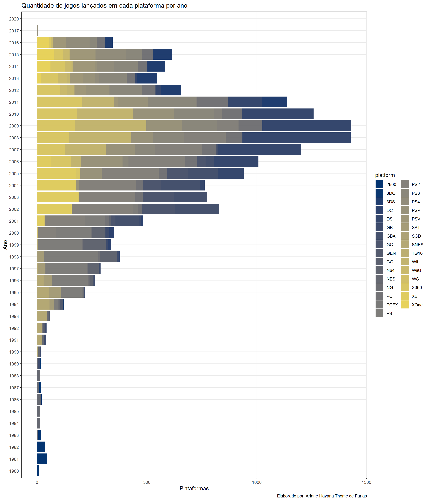

UFSCar - Universidade Federal de São Carlos
ACIEPE - Introdução à Ciência de Dados Usando R
Aluna: Ariane Hayana Thomé de Farias
Entregue em: 21/03/2022

Avaliação 1
1. (Valendo 4 pontos) Construa uma função em R que receba quatro valores inteiros denominados a, b, c e d para realizar o seguinte comportamento. Assuma a seguinte expressão artimética:
[ ] * [ ] + [ ] * [ ]
Em sua função, os espaços em branco da expressão acima (indicados como [ ]) devem ser preenchidos usando os valores a, b, c e d, visando retornar o maior valor possível calculado pela expressão. Por exemplo, se a=1, b=2, c=3, d=4 uma das possibilidades de utilização dos valores para preencher os espaços em branco é: 1 * 4 + 2 * 3. A pergunta que fica, entretanto, é se o resultado da expressão é de fato o maior valor possível que pode ser obtido.
Resposta: Para a resolução da questão, os valores de entrada foram alocados em um vetor de quatro posições, conforme apresentado no enunciado. Assim, tais valores foram ordenados do menor para o maior. Separou-se os dois maiores valores para serem multiplicados entre si e os demais alocados na segunda parte da expressão aritmética. Desta forma, no exemplo considerando as entradas a=1, b=2, c=3, d=4, o resultado obtido na expressão será o maior, ou seja, 14, conforme o código abaixo:
expressao <- function(a,b,c,d){
v <- sort(c(a,b,c,d))
if (!isTRUE(all(v == floor(v)))) stop("Insira APENAS números inteiros!")
resultado <- v[1]*v[2]+v[3]*v[4]
return(resultado)
}
expressao(1,2,3,4)[1] 142. (Valendo 6 pontos) As próximas questões são referentes ao conjunto de dados fornecido em anexo. Ele é oriundo do seguinte link https://www.kaggle.com/gregorut/videogamesales. O conjunto de dados refere-se às vendas de jogos de videogames. De maneira breve, ele é composto pelas seguintes colunas:
| Variável | Descrição |
|---|---|
| Rank | Ranking de vendas gerais |
| Name | Nome do jogo |
| Platform | Plataforma do lançamento do jogo (e.g.. PC, PS4, etc.) |
| Year | Ano de lançamento do jogo |
| Genre | Gênero do jogo |
| Publisher | Editora / Produtora do jogo |
| NA_Sales | Vendas na América do Norte (em milhões) |
| EU_Sales | Vendas na Europa (em milhões) |
| JP_Sales | Vendas no Japão (em milhões) |
| Other_Sales | Vendas no resto do mundo (em milhões) |
| Global_Sales | Total de vendas mundiais |
Para cada questão, forneça o código R necessário para recuperar o que está sendo requerido (usando o pacote tidyverse).
- Organização dos dados:
# Pacotes
library(gt)
library(tidyverse)
# Leitura dos dados
games <- read_csv("dados/vgsales.csv")
# Limpeza dos nomes das colunas
games <- janitor::clean_names(games)a - Recupere todos os jogos produzidos pela Nintendo que foram vendidos na década de 90.
nintendo_90 <- games |>
select(name,year,publisher) |>
filter(year %in% 1990:1999 & publisher %in% "Nintendo") |>
group_by(name) |>
arrange(-desc(year));nintendo_90# A tibble: 124 x 3
# Groups: name [120]
name year publisher
<chr> <chr> <chr>
1 Super Mario World 1990 Nintendo
2 Dr. Mario 1990 Nintendo
3 F-1 Race 1990 Nintendo
4 F-Zero 1990 Nintendo
5 Nintendo World Cup 1990 Nintendo
6 Qix 1990 Nintendo
7 Pilotwings 1990 Nintendo
8 The Legend of Zelda: A Link to the Past 1991 Nintendo
9 SimCity 1991 Nintendo
10 Metroid II: Return of Samus 1991 Nintendo
# ... with 114 more rowsb - Recupere todos os jogos do gênero de Sports, ordenando o resultado em relação ao total de vendas em nível global.
sports <- games |>
select(name,genre,global_sales) |>
filter(genre %in% "Sports") |>
group_by(global_sales) |>
arrange(desc(global_sales));sports# A tibble: 2,346 x 3
# Groups: global_sales [273]
name genre global_sales
<chr> <chr> <dbl>
1 Wii Sports Sports 82.7
2 Wii Sports Resort Sports 33
3 Wii Fit Sports 22.7
4 Wii Fit Plus Sports 22
5 FIFA 16 Sports 8.49
6 Mario & Sonic at the Olympic Games Sports 8.06
7 FIFA 14 Sports 6.9
8 Zumba Fitness Sports 6.81
9 FIFA 12 Sports 6.69
10 FIFA 15 Sports 6.59
# ... with 2,336 more rowsc - Recupere todos os jogos da franquia Mario (existem várias variações desse jogo) lançados a partir de 1998; ordene os jogos de maneira que os mais recentes sejam apresentados primeiro.
`%ni%` <- Negate(`%in%`)
mario <- games |>
select(name,year) |>
filter(year %ni% "N/A") |>
filter(year >= 1998 & str_detect(name, "Mario")) |>
arrange(desc(year));mario # A tibble: 90 x 2
name year
<chr> <chr>
1 Mario & Sonic at the Rio 2016 Olympic Games 2016
2 Mario & Sonic at the Rio 2016 Olympic Games 2016
3 Super Mario Maker 2015
4 Mario Party 10 2015
5 Mario & Luigi: Paper Jam 2015
6 Puzzle & Dragons Z + Super Mario Bros. Edition 2015
7 Mario Tennis Ultra Smash 2015
8 Mario vs. Donkey Kong: Tipping Stars 2015
9 Mario vs. Donkey Kong: Tipping Stars 2015
10 Mario & Luigi: Paper Jam & Mario Kart 7 Double Pack 2015
# ... with 80 more rowsd - Recupere a quantidade média de vendas na Europa para os jogos da plataforma Wii lançados entre 2008 e 2012, inclusive, por gênero e ano de lançamento do jogo.
vendas_europa <- games |>
select(eu_sales,year,genre,platform) |>
filter(year %in% 2008:2012 & platform %in% "Wii") |>
group_by(year,genre,platform) |>
summarise(media_europa = mean(eu_sales, na.rm = TRUE));vendas_europa# A tibble: 56 x 4
# Groups: year, genre [56]
year genre platform media_europa
<chr> <chr> <chr> <dbl>
1 2008 Action Wii 0.0982
2 2008 Adventure Wii 0.0442
3 2008 Fighting Wii 0.229
4 2008 Misc Wii 0.155
5 2008 Platform Wii 0.149
6 2008 Puzzle Wii 0.0722
7 2008 Racing Wii 0.637
8 2008 Role-Playing Wii 0.035
9 2008 Shooter Wii 0.0908
10 2008 Simulation Wii 0.115
# ... with 46 more rowse - Mostre em um gráfico de sua escolha (linha ou coluna), a quantidade de jogos lançados em cada plataforma por ano.
